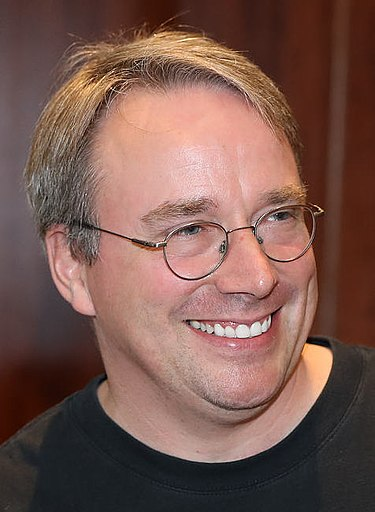

Linus Torvalds is a software engineer who is most famous for inventing the Linux kernel. Torvalds was born in Finland on December 28, 1969 to Nils Torvalds and Anna Torvalds. He works for the Linux foundation as a software engineer. He is married to Tove Torvalds and has 3 children. Although he is most popular for making the Linux kernel, he is also creating his own programming language so he could develop operating systems and games. He is a hero to many technology-oriented people.
One of the most influential people in the world.
~Time magazine The famous People
Learn more about Linus Torvals and his work.